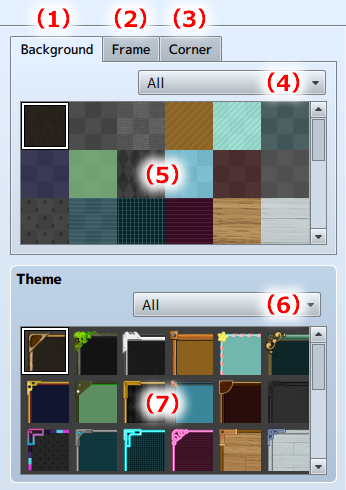

Image Selection
Selecting images includes the [Background], [Frame], and [Corners].
All parts can be set by selecting a [Theme].
Parts Tab and Themes
The individual images used in a window can be selected from the Parts Tab.
By selecting a Theme, the [Background], [Frame], and [Corners] can all be set at once.

- (1) Background Tab
- Select this to display a list of background images.
- (2) Frame Tab
- Select this to display a list of frame images.
- (3) Corner Tab
- Select this to display a list of images for the window's four corners.
- (4) Select Parts Category
- The parts displayed can be narrowed down by selecting the Parts Category.
- (5) Parts Image Selection Area
- Select the parts image displayed to see it in the Preview Area.
- (6) Theme Category Selection
- The theme images displayed can be narrowed down by selecting the Theme Category.
- (7) Theme Image Selection Area
- Select the theme image displayed to see it in the Preview Area.